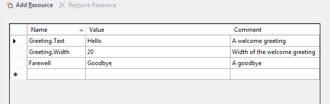
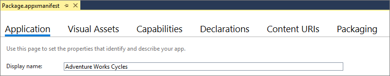
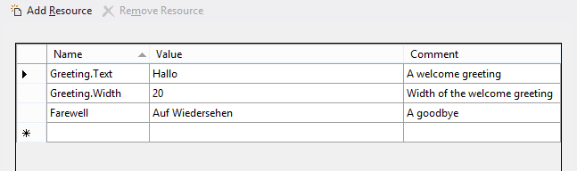
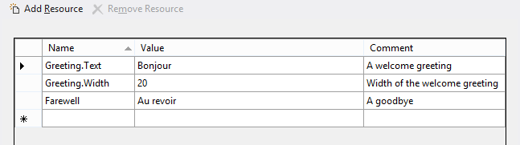
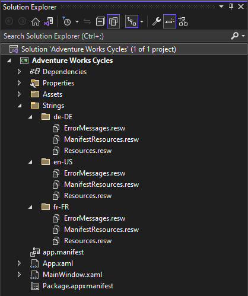

Localize strings in your UI and the app package manifest
For more info about the value proposition of localizing your Windows App SDK app, see Globalization and localization.
If you want your app to support different display languages, and you have string literals in your code or XAML markup or app package manifest, then move those strings into a Resources File (.resw). You can then make a translated copy of that Resources File for each language that your app supports.
Hardcoded string literals can appear in imperative code or in XAML markup, for example as the Text property of a TextBlock. They can also appear in your app package manifest source file (the Package.appxmanifest file), for example as the value for Display name on the Application tab of the Visual Studio Manifest Designer. Move these strings into a Resources File (.resw), and replace the hardcoded string literals in your app and in your manifest with references to resource identifiers.
Unlike image resources, where only one image resource is contained in an image resource file, multiple string resources are contained in a string resource file. A string resource file is a Resources File (.resw), and you typically create this kind of resource file in a \Strings folder in your project. For background on how to use qualifiers in the names of your Resources Files (.resw), see Tailor your resources for language, scale, and other qualifiers.
Store strings in a resources file
Set your app's default language.
- With your solution open in Visual Studio, open
Package.appxmanifest. - On the Application tab, confirm that the Default language is set appropriately (for example, "en" or "en-US"). The remaining steps will assume that you have set the default language to "en-US".
Note
At a minimum, you need to provide string resources localized for this default language. Those are the resources that will be loaded if no better match can be found for the user's preferred language or display language settings.
- With your solution open in Visual Studio, open
Create a Resources File (.resw) for the default language.
- Under your project node, create a new folder and name it
Strings. - Under
Strings, create a new sub-folder and name iten-US. - Under
en-US, create a new Resources File (.resw) (under the WinUI file types in the Add New Item dialog) and confirm that it is namedResources.resw.
Note
If you have .NET Resources Files (.resx) that you want to port, see Porting XAML and UI.
- Under your project node, create a new folder and name it
Open
Resources.reswand add these string resources.Strings/en-US/Resources.resw
In this example, "Greeting" is a string resource identifier that you can refer to from your markup, as we'll show. For the identifier "Greeting", a string is provided for a Text property, and a string is provided for a Width property. "Greeting.Text" is an example of a property identifier because it corresponds to a property of a UI element. You could also, for example, add "Greeting.Foreground" in the Name column, and set its Value to "Red". The "Farewell" identifier is a simple string resource identifier; it has no sub-properties and it can be loaded from imperative code, as we'll show. The Comment column is a good place to provide any special instructions to translators.
In this example, since we have a simple string resource identifier entry named "Farewell", we cannot also have property identifiers based on that same identifier. So, adding "Farewell.Text" would cause a Duplicate Entry error when building
Resources.resw.Resource identifiers are case insensitive, and must be unique per resource file. Be sure to use meaningful resource identifiers to provide additional context for translators. And don't change the resource identifiers after the string resources are sent for translation. Localization teams use the resource identifier to track additions, deletions, and updates in the resources. Changes in resource identifiers—which is also known as "resource identifiers shift"—require strings to be retranslated, because it will appear as though strings were deleted and others added.
Refer to a string resource identifier from XAML
You use an x:Uid directive to associate a control or other element in your markup with a string resource identifier.
<TextBlock x:Uid="Greeting"/>
At run-time, \Strings\en-US\Resources.resw is loaded (since right now that's the only Resources File in the project). The x:Uid directive on the TextBlock causes a lookup to take place, to find property identifiers inside Resources.resw that contain the string resource identifier "Greeting". The "Greeting.Text" and "Greeting.Width" property identifiers are found and their values are applied to the TextBlock, overriding any values set locally in the markup. The "Greeting.Foreground" value would be applied, too, if you'd added that. But only property identifiers are used to set properties on XAML markup elements, so setting x:Uid to "Farewell" on this TextBlock would have no effect. Resources.resw does contain the string resource identifier "Farewell", but it contains no property identifiers for it.
When assigning a string resource identifier to a XAML element, be certain that all the property identifiers for that identifier are appropriate for the XAML element. For example, if you set x:Uid="Greeting" on a TextBlock then "Greeting.Text" will resolve because the TextBlock type has a Text property. But if you set x:Uid="Greeting" on a Button then "Greeting.Text" will cause a run-time error because the Button type does not have a Text property. One solution for that case is to author a property identifier named "ButtonGreeting.Content", and set x:Uid="ButtonGreeting" on the Button.
Instead of setting Width from a Resources File, you'll probably want to allow controls to dynamically size to content.
Note
For attached properties, you need a special syntax in the Name column of a .resw file. For example, to set a value for the AutomationProperties.Name attached property for the "Greeting" identifier, this is what you would enter in the Name column.
Greeting.[using:Microsoft.UI.Xaml.Automation]AutomationProperties.Name
Refer to a string resource identifier from code
You can explicitly load a string resource based on a simple string resource identifier.
var resourceLoader = new Microsoft.Windows.ApplicationModel.Resources.ResourceLoader();
this.myXAMLTextBlockElement.Text = resourceLoader.GetString("Farewell");
You can use this same code from within a Class Library project. At runtime, the resources of the app that's hosting the library are loaded. We recommend that a library loads resources from the app that hosts it, since the app is likely to have a greater degree of localization. If a library does need to provide resources then it should give its hosting app the option to replace those resources as an input.
If a resource name is segmented (it contains "." characters), then replace dots with forward slash ("/") characters in the resource name. Property identifiers, for example, contain dots; so you'd need to do this substitution in order to load one of those from code.
this.myXAMLTextBlockElement.Text = resourceLoader.GetString("Fare/Well"); // <data name="Fare.Well" ...> ...
If in doubt, you can use MakePri.exe to dump your app's PRI file. Each resource's uri is shown in the dumped file.
<ResourceMapSubtree name="Fare"><NamedResource name="Well" uri="ms-resource://<GUID>/Resources/Fare/Well">...
Refer to a string resource identifier from your app package manifest
Open your app package manifest source file (the
Package.appxmanifestfile), in which by default your app'sDisplay nameis expressed as a string literal.
To make a localizable version of this string, open
Resources.reswand add a new string resource with the name "AppDisplayName" and the value "Adventure Works Cycles".Replace the Display name string literal with a reference to the string resource identifier that you just created ("AppDisplayName"). You use the
ms-resourceURI (Uniform Resource Identifier) scheme to do this.Repeat this process for each string in your manifest that you want to localize. For example, your app's Short name (which you can configure to appear on your app's tile on Start). For a list of all items in the app package manifest that you can localize, see Localizable manifest items.
Localize the string resources
Make a copy of your Resources File (.resw) for another language.
- Under "Strings", create a new sub-folder and name it "de-DE" for Deutsch (Deutschland).
Note
For the folder name, you can use any BCP-47 language tag. See Tailor your resources for language, scale, and other qualifiers for details on the language qualifier and a list of common language tags. 2. Make a copy of
Strings/en-US/Resources.reswin theStrings/de-DEfolder.Translate the strings.
- Open
Strings/de-DE/Resources.reswand translate the values in the Value column. You don't need to translate the comments.
Strings/de-DE/Resources.resw
- Open
If you like, you can repeat steps 1 and 2 for a further language.
Strings/fr-FR/Resources.resw

Test your app
Test the app for your default display language. You can then change the display language in Settings > Time & Language > Region & language > Languages and re-test your app. Look at strings in your UI and also in the shell (for example, your title bar—which is your Display name—and the Short name on your tiles).
Note
If a folder name can be found that matches the display language setting, then the Resources File inside that folder is loaded. Otherwise, fallback takes place, ending with the resources for your app's default language.
Factoring strings into multiple Resources Files
You can keep all of your strings in a single Resources File (resw), or you can factor them across multiple Resources Files. For example, you might want to keep your error messages in one Resources File, your app package manifest strings in another, and your UI strings in a third. This is what your folder structure would look like in that case.

To scope a string resource identifier reference to a particular file, you just add /<resources-file-name>/ before the identifier. The markup example below assumes that ErrorMessages.resw contains a resource whose name is "PasswordTooWeak.Text" and whose value describes the error.
<TextBlock x:Uid="/ErrorMessages/PasswordTooWeak"/>
You only need to add /<resources-file-name>/ before the string resource identifier for Resources Files other than Resources.resw. That's because "Resources.resw" is the default file name, so that's what's assumed if you omit a file name (as we did in the earlier examples in this topic).
The code example below assumes that ErrorMessages.resw contains a resource whose name is "MismatchedPasswords" and whose value describes the error.
var resourceLoader = new Microsoft.Windows.ApplicationModel.Resources.ResourceLoader("ErrorMessages");
this.myXAMLTextBlockElement.Text = resourceLoader.GetString("MismatchedPasswords");
If you were to move your "AppDisplayName" resource out of Resources.resw and into ManifestResources.resw, then in your app package manifest you would change ms-resource:AppDisplayName to ms-resource:/ManifestResources/AppDisplayName.
If a resource file name is segmented (it contains "." characters), then leave the dots in the name when you reference it. Don't replace dots with forward slash ("/") characters, like you would for a resource name.
var resourceLoader = new Microsoft.Windows.ApplicationModel.Resources.ResourceLoader("Err.Msgs");
If in doubt, you can use MakePri.exe to dump your app's PRI file. Each resource's uri is shown in the dumped file.
<ResourceMapSubtree name="Err.Msgs"><NamedResource name="MismatchedPasswords" uri="ms-resource://<GUID>/Err.Msgs/MismatchedPasswords">...
Load a string for a specific language or other context
The default ResourceContext (obtained when creating a ResourceLoader) contains a qualifier value for each qualifier name, representing the default runtime context (in other words, the settings for the current user and machine). Resources Files (.resw) are matched—based on the qualifiers in their names—against the qualifier values in that runtime context.
But there might be times when you want your app to override the system settings and be explicit about the language, scale, or other qualifier value to use when looking for a matching Resources File to load. For example, you might want your users to be able to select an alternative language for tooltips or error messages.
You can do that by constructing a new ResourceContext, overriding its values, and then using that context object in your string lookups.
var resourceManager = new Microsoft.Windows.ApplicationModel.Resources.ResourceManager();
var resourceContext = resourceManager.CreateResourceContext();
resourceContext.QualifierValues["Language"] = "de-DE";
var resourceMap = resourceManager.MainResourceMap.GetSubtree("Resources");
this.myXAMLTextBlockElement.Text = resourceMap.GetValue("Farewell", resourceContext).ValueAsString;
Using QualifierValues as in the code example above works for any qualifier. For the special case of Language, you can alternatively do this instead.
resourceContext.Languages = new string[] { "de-DE" };
Load strings from a Class Library
The string resources of a referenced Class Library are typically added into a subfolder of the package in which they're included during the build process. The resource identifier of such a string usually takes the form LibraryName/ResourcesFileName/ResourceIdentifier.
A library can get a ResourceLoader for its own resources. For example, the following code illustrates how either a library or an app that references it can get a ResourceLoader for the library's string resources.
var resourceLoader = new Microsoft.Windows.ApplicationModel.Resources.ResourceLoader("ContosoControl/Resources");
this.myXAMLTextBlockElement.Text = resourceLoader.GetString("exampleResourceName");
If in doubt about the path, you can specify MakePri.exe command line options to dump your component or library's PRI file. Each resource's uri is shown in the dumped file.
<NamedResource name="exampleResourceName" uri="ms-resource://Contoso.Control/Contoso.Control/ReswFileName/exampleResourceName">...
Loading strings from other packages
The resources for an app package are managed and accessed through the package's own top-level ResourceMap that's accessible from the ResourceManager. Within each package, various components can have their own ResourceMap subtrees, which you can access via ResourceMap.GetSubtree.
A framework package can access its own resources with an absolute resource identifier URI. Also see URI schemes in the UWP documentation for more information.
Loading strings in unpackaged applications
As of Windows Version 1903 (May 2019 Update), unpackaged applications can also leverage the Resource Management System.
Just create your Windows App SDK user controls/libraries and store any strings in a resources file. You can then refer to a string resource identifier from XAML, refer to a string resource identifier from code, or load strings from a Class Library.
To use resources in unpackaged applications, you should do a few things:
- Use the overloaded constructor of ResourceManager to pass file name of your app's .pri file when resolving resources from code as there is no default view in unpackaged scenarios.
- Use MakePri.exe to manually generate your app's resources.pri file.
- Run
makepri new /pr <PROJECTROOT> /cf <PRICONFIG> /of resources.pri - The <PRICONFIG> must omit the "<packaging>" section so that all resources are bundled in a single resources.pri file. If using the default MakePri.exe configuration file created by createconfig, you need to delete the "<packaging>" section manually after it is created.
- The <PRICONFIG> must contain all relevant indexers required to merge all resources in your project into a single resources.pri file. The default MakePri.exe configuration file created by createconfig includes all indexers.
- If you don't use the default config, make sure the PRI indexer is enabled (review the default config for how to do this) to merge PRIs found from project references, NuGet references, and so on, that are located within the project root.
Note
By omitting
/IndexName, and by the project not having an app manifest, the IndexName/root namespace of the PRI file is automatically set to Application, which the runtime understands for unpackaged apps (this removes the previous hard dependency on package ID). When specifying resource URIs, ms-resource:/// references that omit the root namespace infer Application as the root namespace for unpackaged apps (or you can specify Application explicitly as in ms-resource://Application/).
- Run
- Copy the PRI file to the build output directory of the .exe
- Run the .exe
Note
The Resource Management System uses the system display language rather than the user preferred language list when resolving resources based on language in unpackaged apps. The user preferred language list is only used for Windows App SDK packaged apps.
Important
You must manually rebuild PRI files whenever resources are modified. We recommend using a post-build script that handles the MakePri.exe command and copies the resources.pri output to the .exe directory.